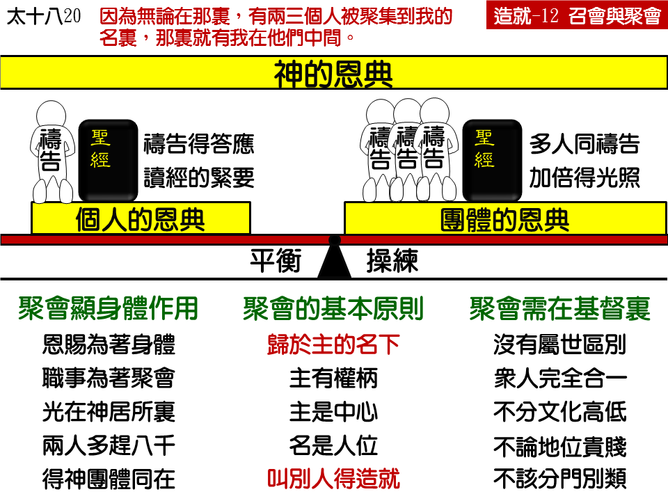

诗歌：624 首、629 首
读经：
希伯来书十章二十五节：不可放弃我们自己的聚集，好像有些人习惯了一样，倒要彼此劝勉；既看见那日子临近，就更当如此。
马太福音十八章二十节：因为无论在哪里，有两三个人被聚集到我的名里，哪里就有我在他们中间。
哥林多前书十四章二十六节：弟兄们，这却怎么样？每逢你们聚在一起的时候，各人或有诗歌，或有教训，或有启示，或有方言，或有翻出来的话，凡事都当为建造。
纲 目：
壹 团体的恩典是在聚会里——来十25。
贰 召会与聚会——徒四23~31，林前十四 23。
叁 聚会彰显身体的功用——申三二30，太十八20。
肆 聚会的原则：
一 归于主的名下——太十八 20。
二 叫别人得造就——林前十四 26。
伍 在基督里－信徒是合一而没有区别的：
一 信徒没有属世的区别——林前十二13。
二 在基督里都成为一了——加三27~28。
三 在新人里没有人为的区别——西三10~11：
1 没有民族国家及天性的区别。
2 没有自主为奴的区别。
3 没有男女地位的区别。
4 没有文化程度的区别。
5 没有肉身敬虔的区别。
信息选读：
团体的恩典是在聚会里
神的话是说，“你们不可停止聚会。”为什么不可停止聚会呢？因为神要在聚会里给我们恩典。神给人恩典是分作两类：一类是个人的，一类是团体的。神不只给我们个人的恩典，神还给我们团体的恩典。这一个团体的恩典，只有在聚会里才能得着。
召会与聚会
“召会”这个辞是什么意思呢？召会这个辞，在希腊文是读作“爱克利西亚。”“爱克，”意即出来，“利西亚，”意即会集或聚集；“爱克利西亚，”意思就是出来的人聚集在一起。神不只要有被召的人而已，神还要被召的人有聚集。如果被召的人一个个的分开，那就看不见召会，召会就不能产生。 所以我们信主以后，有一个基本的需要，就是要和神的儿女聚集在一起。弟兄姊妹千万不要有一个古怪的思想说，“我要作一个自修的基督徒。”你必须把这个思想打破。基督教没有自修的基督徒，只有全召会聚集在一起。你不要以为关在家里单独的祷告、读圣经，就能作基督徒。基督教不只建立在个人身上，也是建立在聚会上。
聚会彰显身体的作用
林前十二章是讲身体，十四章是讲聚会。十二章讲圣灵的恩赐，十四章也讲圣灵的恩赐。十二章是讲恩赐在身体上，十四章是讲恩赐在召会中。按这两章圣经来看，好像身体上各肢体互相效力的作用，乃是在聚会中表现的。因为你把十二章和十四章连在一起读，你就明显的看见，十二章里的身体，到十四章发生作用了。一边说身体，一边说聚会；一边说恩赐在身体里，一边说恩赐在聚会中。身体的作用特别在聚会中彰显。肢体的互相效力，眼睛帮助脚，耳朵帮助手，手帮助口，互相影响，互相扶持，是特别在聚会中发生作用的。因此，在聚会的时候，我们的祷告能多得着答应。因此，有许多时候个人没有光，到聚会中就有光。个人在神面前追求所看见的，赶不上在聚会中所看见的。神所安排的职事，都是在聚会中表现的；神所安排的职事，都是为着聚会的。所以如果有人少聚会，他就很少机会能知道什么叫作身体的作用。
主和个人的同在是一件事，主在聚会中的同在又是一件事。有些人只认识主和个人的同在，但是，只认识这个是不够的。厉害的同在，有力量的同在，要在聚会中才摸得着，个人摸不着。虽然个人也能得着主的同在，但是那一个度数总是比较差，总是没有那么大的力量。只有和弟兄姊妹在一起的时候，才能摸着主的同在，是你个人所没有摸着的。你要学习和弟兄姊妹在一起聚会，你在聚会里才能特别觉得主的同在。那是一个大恩典。那个同在，凭着你个人是没有方法得着的。我们很少碰着一个自修的基督徒，能够得着主那一种有力量的同在。
聚会的原则
我们该怎样聚会呢？关于聚会的事，圣经所说的第一个基本的原则，就是所有的聚会都得归于主的名下。什么叫作归于主的名下？意思就是说，归在主的权柄底下。主是中心，所有的人都被吸引来到主的面前。我们去聚会，不是去看某某弟兄、某某姊妹，也不是某某弟兄、某某姊妹吸引我们去聚会。我们去聚会，乃是和许多弟兄姊妹一同到主的名下来，那一个中心是主。我们所以聚会，不是去听人讲道，乃是去朝见主。你如果是为着听某人讲道而聚会，那恐怕你是归于某人的名下，而不是归于主的名下。有时人用人的名来吸引人，意思是要人来归在那个人的名下。但是主说，要归在祂的名下聚集。
聚会第二个原则，是要造就人。保罗在林前十四章里告诉我们，聚会的基本原则，就是为着造就人，不是为着造就自己，所有在聚会中作的事，乃是以别人得着造就为目的，不是以自己得着造就为目的。
每一个人去聚会的时候，都要抱着一个目的：我是为着别人，不是专为自己。凡能妨碍别人的，就不作。如果不开口会妨碍别人，就不能不开口；如果开口会妨碍别人，就不能开口。要学习为着造就人而开口，也要学习为着造就人而不开口。是为着造就人，不是为着造就自己。你不为着自己的时候，你自己就得着造就。你只想你自己的时候，你就得不着造就。
在基督里
天性是召会里所没有的，天性是基督里所没有的，天性是新人里所没有的。你不要以为别人的性情和你不一样，你就说他是不对的。你要知道，你自己的性情，别人也看不上眼。所以，你是性急的也罢，你是安静的也罢，你是冷的也罢，你是热的也罢，你是讲理性的也罢，你是讲感觉的也罢，你一进来作弟兄，作姊妹，这些东西就要留在门外。不然的话，你把这些天性的东西带到召会里来，就变作混乱、分裂的根据。你把你的性情、脾气带到召会里来，以为你就是标准，你就是格；凡及你格的，就是好基督徒，凡不及你格的，就不是好基督徒；和你性格合的就对，和你性格不合的就不对。这样，召会就因你的性情、脾气而受到亏损。所以，这种区别在召会里不能存在。
我们都是弟兄姊妹，我们都是在基督里作新人，我们都是在身体上作肢体，我们都是身体上的一部分。我们如果是在召会里，就不再有基督以外的区别。所有的人，都是站在新的地位上，都在主所造成的新人里面，都在主所建立的身体里面。我们必须看见，所有神的儿女，都是合一的，不要有优越感，不要有自卑感。必须从心里把宗派的意念除掉，把分门别类的意念除掉。这样，在神的召会中，在聚会的时候，在弟兄姊妹彼此交通的时候，也就不至分门别类了。我们不但在聚会中要注意这些事，也要在日常生活中活出这种生活来。愿神祝福我们。 （摘自初信造就第十二篇）
课程复习：
一 神给我们的恩典有哪两类？
二 我们得救后为什么要聚会？
三 聚会有什么作用？
四 聚会有哪些原则？
五 为何我们聚会时该记得信徒在基督里是合一的？
